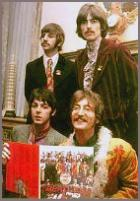
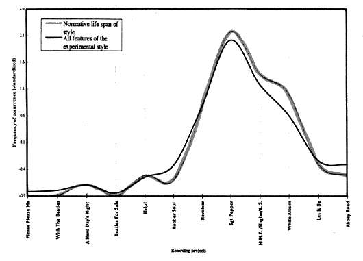
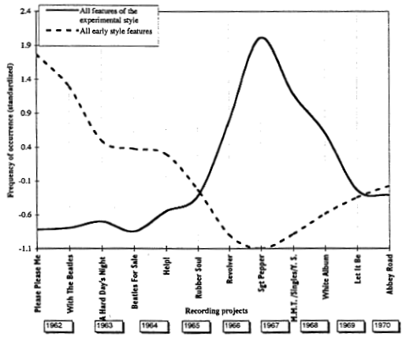

The rise and fall of the experimental style of the Beatles |
||||||||||||||||||||||||||||||||||||||||||||||||||||||||||||||||||||||||||||||
| 4. Results | ||||||||||||||||||||||||||||||||||||||||||||||||||||||||||||||||||||||||||||||
| by Tuomas Eerola | ||||||||||||||||||||||||||||||||||||||||||||||||||||||||||||||||||||||||||||||
 The Beatles implemented their novel ideas progressively from the start of their recording career. The stylistic turning point, however, is commonly considered to be "Yesterday" (1965) on the Help! album and more perceptibly the songs on the Rubber Soul (1965) album. Their experimental style peaks at the Sgt. Pepper's (1967) album and next is falling down. This pattern is checked by confronting the statistical population curves of the individual features with Gjerdingen's model of the "normative life span" of style, by a statistical analysis of the lyrics and the song writers' own point of view. Next our analysis identifies the ten most prototypical songs and gives a short comparison of the experimental period with the early and late periods of the Beatles' recording career. |
||||||||||||||||||||||||||||||||||||||||||||||||||||||||||||||||||||||||||||||
|
|
||||||||||||||||||||||||||||||||||||||||||||||||||||||||||||||||||||||||||||||
| 1 | The statistical rise and fall of the Beatles' experimental style period. The Beatles started to try out novel ideas progressively even almost from the beginning of their recording career, but the stylistic turning point is commonly considered to be "Yesterday" (1965) on the Help! album (Coleman, 1995; Porter, 1979: 389; Martin & Hornsby, 1979: 133, 167; Martin & Pearson, 1994: 76; Stuessy, 1994: 119). Several authors characterizing their stylistic period agree with the previous, although they assume the change is not perceptible until from the Rubber Soul (1965) album onwards. This equivocal question about estimating the beginning of the period will be considered later on the basis of the results obtained here. | |||||||||||||||||||||||||||||||||||||||||||||||||||||||||||||||||||||||||||||
| The stylistic changes are first evident in the lyrics and instrumentation: the lyrical content of songs started to change and the use of classical instruments and later Indian instruments marked the departure from the traditional teenage music of that time. [8] The main result, the experimental period, is presented by demonstrating the sum of all its individual features and comparing it to the model. Then the concept of life span is considered from other perspectives this material offers: the early period, the summary of all three of the Beatles' periods and finally the skewness of the distribution and the estimation of the periods will be considered in detail. | ||||||||||||||||||||||||||||||||||||||||||||||||||||||||||||||||||||||||||||||
| The population curves of the individual features were found to be similar to the normative life span of style. In fact, most of the experimental period features exhibit curves that are highly similar to it, with only minor deviations. This can be observed by studying their correlation values, provided in Table 1. | ||||||||||||||||||||||||||||||||||||||||||||||||||||||||||||||||||||||||||||||
|
||||||||||||||||||||||||||||||||||||||||||||||||||||||||||||||||||||||||||||||
| Table 1: Correlation between the stylistic features of the Beatles' experimental style and the normative life span of style (* p < 0.05; others: p < 0.01 (df=8)) | ||||||||||||||||||||||||||||||||||||||||||||||||||||||||||||||||||||||||||||||
| It is evident from the Table 1 that the correlation values (4 are all high: the values are all highly significant at p < 0.01, except for the political lyrics at p < 0.05. Although the degree of freedom (df=8) is low, the results reach the 1% level of significance. The only exception from this, political lyrics, may partly be explained by the definition of the feature. In other words, my simple method of textual analysis is incapable of distinguishing such subtle nuances as the alleged political theme of the Sgt. Pepper album consisting of "optimistic escapism [...] [which] set an agenda for a counter-cultural response" (Whiteley, 1992: 40; see also: MacDonald, 1994: 185). | ||||||||||||||||||||||||||||||||||||||||||||||||||||||||||||||||||||||||||||||
| The results are derived from individual populations, which are only a tenth of the size (on the average 25 samples/feature) of Gjerdingen's study (272 samples) acting as the model. However, the total amount of samples (282) of all the features of the experimental period, is equal in size. Despite the high correlation values, one has to be especially careful in drawing any conclusions about the features that have a low amount of samples, such as Indian instruments. | ||||||||||||||||||||||||||||||||||||||||||||||||||||||||||||||||||||||||||||||
| The variations between the features become less crucial when they are grouped together, making the results less prone to singular deviations. Using the average of all the features is possible because the data has the same level of measurement. Furthermore, the population size of all the experimental features and the model is equal. Displaying the average of all the eleven features with the model illuminates the experimental style of the Beatles and how it relates to the normative life span of style (Figure 3). | ||||||||||||||||||||||||||||||||||||||||||||||||||||||||||||||||||||||||||||||
 |
||||||||||||||||||||||||||||||||||||||||||||||||||||||||||||||||||||||||||||||
| Figure 3: Population of all the Beatles' experimental stylistic features and the normative life span of style (Gjerdingen's data) |
||||||||||||||||||||||||||||||||||||||||||||||||||||||||||||||||||||||||||||||
| In Figure 3 the curves of all the features of the experimental style and the normative life span of style, based on the standardized values, appear to be surprisingly similar in shape, which was substantiated by the resulting correlation between the corresponding values, 0.98, which was highly significant (p < 0.001). The previous results were thus replicated, but there is still a possibility that a curve based on the average values of all the features is biased by the few dominating features getting extreme values. This effect can be negated by referring to the results in Table 1, where the features were observed to have reasonably homogeneous statistical distributions. As further proof, the individual features were tested for their standard deviation by using the split-half method. In this method the features have been arranged in two groups — see: Table 1, the first six features before the dotted line belong to Group I and the rest to Group II. The correlation value between them was 0.95, well exceeding the minimum expectation (0.9) for the results to be reliable. | ||||||||||||||||||||||||||||||||||||||||||||||||||||||||||||||||||||||||||||||
| Another question is the positive skewness of the curves. This was tested by comparing the curves with the normal distribution. None of the curves of the features were skewed in the opposite direction and almost ail of them exhibited positive skewness, where all but two features received lower correlation values in the comparison. The two exceptions were Indian instruments, having a low amount of samples, and tone repetition, displaying its peak earlier. | ||||||||||||||||||||||||||||||||||||||||||||||||||||||||||||||||||||||||||||||
| 2 | Summary of the periods. It was assumed that comparing the life span of the early period features to the model might provide directional information about the normative life span. The average of all the features of the early style was compared to the normative life span of style and to the average of the experimental period features. The correlation value in both comparisons was -0.89, which is highly significant but in the opposite direction. However, the results were notably lower than the results obtained from the features of the experimental period. The statistical reliability was also tested as before. In short, the individual correlations are still high, but the results are not as substantial as they were concerning the experimental features. | |||||||||||||||||||||||||||||||||||||||||||||||||||||||||||||||||||||||||||||
| Strangely enough, the correlation values were unusually high although the features represent, technically, only the latter half of the normative life span of style. The high negative correlations show that there is a connection with the model, although it is almost the opposite one. This is not contradictory to the results obtained previously. Rather, the population curves of the early period must be in a different phase than the population curves of the experimental period. The early period features are already at their peak in 1962, but they were naturally learned earlier, during the formative years (1957-62) when they imitated the music of their American idols. If the early part would be equally measurable, it would provide more information. Now the decline of early style is only evident in the time span studied but the same stylistic features were also used to some extent in the late period. This, and the obvious differences of the stylistic phases can most easily be confirmed from the summary of the periods. | ||||||||||||||||||||||||||||||||||||||||||||||||||||||||||||||||||||||||||||||
| Presenting the curves of the experimental and early features in the same figure sums up how the different periods of the Beatles are distributed chronologically. The whole career, the three periods of the Beatles is thus roughly summarized, because the late period was presumed to comprise, if at least for the purposes of this study, of the early and experimental style features (Figure 4). | ||||||||||||||||||||||||||||||||||||||||||||||||||||||||||||||||||||||||||||||
 |
||||||||||||||||||||||||||||||||||||||||||||||||||||||||||||||||||||||||||||||
| Figure 4: Population of the Beatles' early and experimental style features | ||||||||||||||||||||||||||||||||||||||||||||||||||||||||||||||||||||||||||||||
| In Figure 4, there are year-labels. added to the summary to ease the analysis, although the chronological intervals are not absolute ones. Different periods can be explicitly seen to overlap each other. It is worth mentioning that the lowest point of the early period falls at the same place as the peak of the experimental period (Sgt. Pepper, 1967). In a way it is natural, because the instrumentation greatly affects both style periods: new instruments came to replace the old ones but the basic line-up still acted as the foundation when the instrumentation was expanded. However, this explanation leaves several features unconsidered and therefore the summary renders the features as truly representatives of the early period, which were not used during the experimental period. Therefore the chronological presentation of the features is able to tell in its own objective way what kind of periods the Beatles' three periods were and when they existed. | ||||||||||||||||||||||||||||||||||||||||||||||||||||||||||||||||||||||||||||||
| Also, the unanswered question about the very close of relationship between the early period features and the normative life span is illuminated above. Only the experimental period displays a complete life span, although three separate periods are evident. The early period and the late period can be seen to create only partial life spans, but as these partial life spans consist of the same features, they coincidentally raise the (negative) correlation with the model. Therefore the results obtained from the early period suggest that the early style might exhibit a normative life span but, more importantly, the results illustrate the way several periods work in succession, conforming also to the predictions of psychological theories of artistic change. | ||||||||||||||||||||||||||||||||||||||||||||||||||||||||||||||||||||||||||||||
| The late period can be seen to consist of the early features and the experimental features, although it has also other stylistic features, which were not studied here. Therefore, the late period could be termed a synthesis of the old and new. The overlapping of the periods is also evident in 1965 when the experimental period made its breakthrough and also in 1968, at the beginning of the late period. Details of the Beatles' periods can be read from the figure, such as the Rubber Soul (1965) album having considerably fewer features of the early period than there were three years earlier and that the early period features are on the rise on the White Album (1968). Furthermore, these results can be compared with the results of other studies. | ||||||||||||||||||||||||||||||||||||||||||||||||||||||||||||||||||||||||||||||
| 3 | Comparison with statistical analysis of the lyrics. Some approaches in the psychology of arts have attempted to capture the regularities of works of art by statistical analyses. This has mostly been done in the area of literature and poetry where the texts can be submitted to automated analysis. Conveniently, there are two studies that have investigated the lyrics of the Beatles in this manner. West and Martindale (1996) studied the lyrics of the Beatles by means of computerized content analysis and found highly significant linear uptrends in regressive imagery, type-token ratio, hapax legomena, and mean word length. Their findings support the Berlyne's theory of preference (1971) and more specifically the theory of aesthetic evolution (see: Martindale, 1990). Another statistical study (Whissell, 1996), which used stylometric analysis of the Beatles' lyrics demonstrated that the different stages of the Beatles' career emphasized different emotional components. When these results are compared to the results of the present study, we find that the certain textual variables correlate significantly with the particular style, see: Table 2. | |||||||||||||||||||||||||||||||||||||||||||||||||||||||||||||||||||||||||||||
|
||||||||||||||||||||||||||||||||||||||||||||||||||||||||||||||||||||||||||||||
| Table 2: Correlations between Whissell's (1996) analysis of the lyrics and the stylistic features of the experimental and early styles of the Beatles (*** p < .001, ** p < .05, + p = .068, ++ p = .15, (df=11)) [9] |
||||||||||||||||||||||||||||||||||||||||||||||||||||||||||||||||||||||||||||||
| It is no surprise that pleasantness, repetitiveness and the use of first and second person pronouns relate strongly with the early style. Also, later their repertoire of words became larger (word frequency) and they wrote longer phrases (punctuation). Likewise, the textual themes used in the present study connect in a sensible way to Whissell's automated analysis. For example, romantic lyrics, a typical feature of the early style, correlate highly significantly with the use of first person pronouns and the pleasantness of the words (r(11)= .95, p < .0001 and r(10)= .64, p < .05, respectively). These parallels add another perspective to the study of stylistic change, which should be fully investigated in future research. | ||||||||||||||||||||||||||||||||||||||||||||||||||||||||||||||||||||||||||||||
| For the complete picture of the Beatles' musical style periods and their career, however, it is useful to assess the statistical facts in relation to the songwriters' own comments about the periods and change. | ||||||||||||||||||||||||||||||||||||||||||||||||||||||||||||||||||||||||||||||
| 4 | Songwriters' point of view. Generally speaking, the Beatles themselves support the way the periods are displayed in the statistical. presentation. There are many accounts of how they started the experimenting. For example, in November 1968, John Lennon described the beginning of the change from the traditional style by listing songs from 1965 where the experimental period, also according to Figure 5, began: "[...] "Day Tripper," "Paperback Writer," even. "Ticket To Ride" was one more, I remember that. It was a definite sort of change. "Norwegian Wood" — that was the sitar bit" (Cott, 1968: 47). Both McCartney and Lennon characterized the album Sgt. Pepper as being the peak (Stuessy, 1994: 125; also: Wenner, 1971a: 138). Lennon's review of the experimental period in 1968 conveys how he saw the experimenting and the beginning of the next (late) period (Cott, 1968: 48): | |||||||||||||||||||||||||||||||||||||||||||||||||||||||||||||||||||||||||||||
| "I mean, we got a bit pretentious. Like everybody, we had our phase and now it's a little change over to trying to be more natural, less "newspaper taxis," say. I mean, we're just changing. I don't know what we're doing at all, I just write them [songs]." | ||||||||||||||||||||||||||||||||||||||||||||||||||||||||||||||||||||||||||||||
| The answer reveals the aspiration of returning to a simpler, more natural expression meaning basic rock and roll, after a psychedelic period, to which the "newspaper taxis" refer. McCartney has also commented similarly (Dowlding, 1989: 221). The change, however, began already in Sgt. Pepper, as expressed by Lennon: "After Brian Epstein [the Beatles' manager from the year 1962 to his death on 27.8.1967] died we collapsed. [...] That was the disintegration" (Wenner, 1971a: 138, 51). Or to quote McCartney (Garbarini et al, 1980: 71): "The White Album. That was the tension album. We were all in the midst of the psychedelic thing, or just coming out of it. [...] we were about to break up." Both quotations characterize the gradual beginning of the late style that followed the gradual decline of the experimental style, hence the overlapping nature of the periods. As can be seen, the songwriter's comments can easily be related to the figure which just presents statistical data. However, the best summary of the Beatles' career has been given by their close associate George Martin: | ||||||||||||||||||||||||||||||||||||||||||||||||||||||||||||||||||||||||||||||
| "If the Beatles' professional career were to be plotted on a graph, then the Pepper would be the high point. Rubber Soul and Revolver were also peaks. Magical Mystery Tour was a definite dip. The Beatles [White Album] was a straight line on the graph, a plateau [...] Let It Be was also a bit of a down slope on the graph, whereas Abbey Road was a lift, a great album" (Martin & Pearson, 1994: 159). | ||||||||||||||||||||||||||||||||||||||||||||||||||||||||||||||||||||||||||||||
| The concept of the life span seems to relate well to the occurrences of the stylistic features, even if there were a few inconsistencies, and at least to how the periods are characterized by the songwriters. Moreover, it was argued that the typicality and the population peak are closely linked to each other and to how the periods are estimated and perceived, which was evident in some respects in the songwriters' comments. These questions will be considered in the following section. | ||||||||||||||||||||||||||||||||||||||||||||||||||||||||||||||||||||||||||||||
| 5 | "Prototypical" songs. According to Gjerdingen the prototype of a musical structure will be found at the population peak (1988: 104). As defined earlier, the prototype was the same as the typical musical structure of the period and those typical members of the category are more easily recalled and thus used in generalizations. When looking at the Beatles' experimental period as presented earlier (Figure 4), the population peak was found to be in 1967, on the Sgt. Pepper album. As I have defined the experimental style of the Beatles as having eleven stylistic features, the prototypical song of that period would have most (and the most prominent) of those features. Thus it could be said that generally such a song would have tone repetition, the bVII chord, instrumentation that uses classical instruments and sound effects. The subject of the lyrics would be nostalgic and they would contain psychedelic metaphors. | |||||||||||||||||||||||||||||||||||||||||||||||||||||||||||||||||||||||||||||
| To give a concrete example, it is possible to find and list the songs that fulfill most of the features of the particular category (experimental style) and minimum number of features in the opposite category (early style) (Rosch & Mervis, 1975). Those songs would be the prototypical songs of the period and could be evaluated against the common knowledge of typicality of the period and the songs. Their recording dates also test if the typicality and the population peak really match as Gjerdingen claims. Table 3 contains the appropriate information. | ||||||||||||||||||||||||||||||||||||||||||||||||||||||||||||||||||||||||||||||
|
||||||||||||||||||||||||||||||||||||||||||||||||||||||||||||||||||||||||||||||
| Table 3: The "prototypical" songs of the experimental period of the Beatles (* Format as published in UK) |
||||||||||||||||||||||||||||||||||||||||||||||||||||||||||||||||||||||||||||||
| Table 3 includes recording dates in order to examine how well the typical songs fit into the peak for that period. Besides the total amount of features (#), the format of the song is mentioned because singles were sold in great quantities. It is, however, questionable how much knowledge about prototypical songs and periods can be gained by relying on the facts about the sales of the records, so I will not present the actual list positions of the songs. Although I cannot take into account the forces of media and markets that affect the sales of the records, these factors relate to typicality in so far as the songwriters or a representative of the recording company (George Martin) usually chose the songs for the singles as the best or most typical examples of that period of recordings. | ||||||||||||||||||||||||||||||||||||||||||||||||||||||||||||||||||||||||||||||
| The top ten most prototypical songs of the experimental period (see: Table 3) seem to portray the period fittingly. Most encyclopedias of popular music mention the five first songs as the most significant or typical songs of the experimental period and half of the songs came out on the Sgt. Pepper album, which was acclaimed as the peak. The songwriters themselves have mentioned in various situations most of those songs as their personal favorites (Wenner, 1971b: 110; Sheff, 1981a: 107). [10] George Martin assesses the song that comprises the greatest amount of features, "Strawberry Fields Forever," in his book about the making of Sgt. Pepper (Martin & Pearson, 1994: 24): "We could not have produced a better prototype for the future." | ||||||||||||||||||||||||||||||||||||||||||||||||||||||||||||||||||||||||||||||
| Martin means the prototype as a model for the future but the Beatles actually did not proceed much further into experimenting than that, except for the avant-garde-influenced work "Revolution #9." Consequently the notion Martin uses is in fact closer to what is meant here by typicality. "Strawberry Fields Forever" combines so many features of the experimental period that it serves as the most prototypical song of that period. It could be said in a pointed way that anyone who has some stylistic knowledge about the Beatles has abstracted a prototype that would include most of the features listed here and therefore the perfect example, "Strawberry Fields Forever," might be the most easily remembered if people were asked what was a typical song of the experimental period of the Beatles. | ||||||||||||||||||||||||||||||||||||||||||||||||||||||||||||||||||||||||||||||
| Actually, a memory study made by Hyman and Rubin (1990) where the songs of the Beatles were used in recalling tasks supports this assertion. Among the best recalled songs in the experiment were four prototypical songs ("A Day In The Life," "All You Need Is Love," "Penny Lane," and "Strawberry Fields Forever," which are over three times more likely to be remembered than by chance. Nevertheless, the prototypical songs are not necessarily the only ones that are liked. | ||||||||||||||||||||||||||||||||||||||||||||||||||||||||||||||||||||||||||||||
| According to the model, the most typical songs should also be found at the same place as the population peak. Ten of the most typical songs of the experimental period were recorded between the dates 24.11.1966 and 5.9.1967, within a ten-month period, which is well within prior assumptions, that is, the population peak of that period. Closer inspection shows that most of the ten prototypical songs were recorded during the early months of 1967 which supports the hypothesis of the population peak and the typicality. The ten prototypical songs of early period were recorded between 11.9.1962 and 2.6.1964, which is rather a large time frame. Most of the songs were recorded in 1962 or 1963, which is no surprise, but as mentioned earlier, the early period features might not represent the early period as a whole so well. | ||||||||||||||||||||||||||||||||||||||||||||||||||||||||||||||||||||||||||||||
| 6 | Early and late periods. The late period of the Beatles is not entirely under inspection in this study but as a final test it is possible to attempt to stretch the theories and quantitative method to characterize the late period. It was said to comprise the stylistic features that were common to the earlier period and to the experimental period. As a test, all the songs that have two or more features of both former style periods were found. Nine of the ten highest ranking songs in this measurement fall between the period 18.7.1968-21.7.1969, which at least proves that the premises for the characterization of the late period were right because the period is seen to consist of features from both of the previous periods. | |||||||||||||||||||||||||||||||||||||||||||||||||||||||||||||||||||||||||||||
| There are also other songs that are generally regarded as very typical of the Beatles that failed to show up in the results. Songs such as "Yesterday" (1965), "She Loves You" (1963) and "I Want To Hold Your Hand" (1963) are often associated with the Beatles, but as this study focuses on periods, some information must be omitted in order to do abstractions such as this. Even if this abstraction is similar to that which people use when categorizing data from their environment, this method is unsuitable as such for a critical analysis and should rather be used in conjunction with an analysis of the individual pieces. | ||||||||||||||||||||||||||||||||||||||||||||||||||||||||||||||||||||||||||||||
| Naturally, the popularity of the songs does not have to follow any strict periodization. A good, catchy melody and public opinion, live appearances, marketing and media forces are as important a part of popularity as anything to do with the song itself. | ||||||||||||||||||||||||||||||||||||||||||||||||||||||||||||||||||||||||||||||
| Notes | ||||||||||||||||||||||||||||||||||||||||||||||||||||||||||||||||||||||||||||||
| 8. At first new stylistic features were possibly thematically connected. That is, nostalgic songs had an instrumentation that reflected or corresponded to their lyrical content. Also, the psychedelic lyrics and corresponding instrumentation was found to be another thematically connected pair of innovative stylistic features (Eerola, 1997). | ||||||||||||||||||||||||||||||||||||||||||||||||||||||||||||||||||||||||||||||
| 9. Cynthia Whissell kindly made available the original data of her 1996 study. Whissell's results have been reordered into the recording projects before the comparison. | ||||||||||||||||||||||||||||||||||||||||||||||||||||||||||||||||||||||||||||||
| 10. Also, in 1987 George Harrison published a song called When We Was Fab, a satire which, in his own words, "would evoke a Fabs [abbreviation of The Fabulous Beatles] song" (White, 1990: 157). Curiously or inevitably enough, it is a prime example of a Beatles' song of the experimental period, containing most of the features defined and found prominently in this essay. | ||||||||||||||||||||||||||||||||||||||||||||||||||||||||||||||||||||||||||||||
|
|
||||||||||||||||||||||||||||||||||||||||||||||||||||||||||||||||||||||||||||||
| 2000 © Soundscapes | ||||||||||||||||||||||||||||||||||||||||||||||||||||||||||||||||||||||||||||||